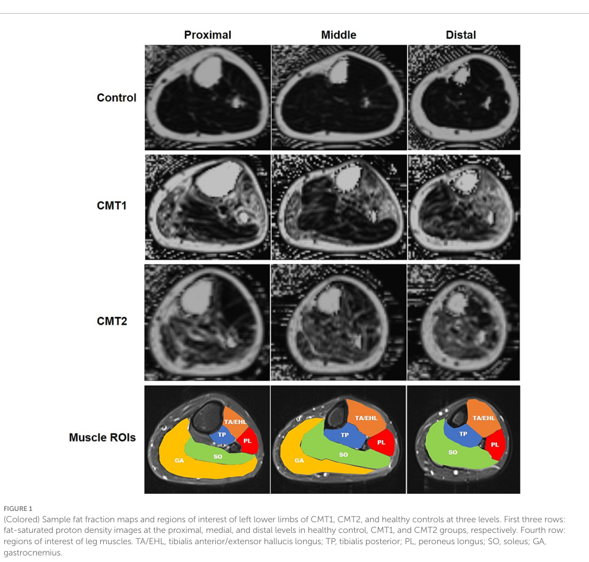

Charcot-Marie-Tooth disease type 2 (CMT2) is a group of inherited peripheral neuropathies characterized by axonal degeneration of peripheral nerves without primary demyelination. Unlike CMT1, which involves Schwann cell dysfunction and demyelination, CMT2 is primarily an axonopathy with normal or near-normal nerve conduction velocities (>38 m/s) but reduced compound muscle action potential amplitudes. CMT2 is genetically heterogeneous, with over 20 subtypes identified, the most common being CMT2A (MFN2 mutations) and CMT2E (NEFL mutations). Clinical features include progressive distal muscle weakness and atrophy, sensory loss, foot deformities, and areflexia, typically with onset in the first to second decade of life.
Ask a research question about Charcot-Marie-Tooth Disease Type 2. OpenScientist will conduct autonomous deep research using the Disorder Mechanisms Knowledge Base and PubMed literature (typically 10-30 minutes).
Do not include personal health information in your question. Questions and results are cached in your browser's local storage.
name: Charcot-Marie-Tooth Disease Type 2
creation_date: "2026-04-08T23:00:00Z"
updated_date: "2026-04-29T01:06:55Z"
category: Genetic
description: >
Charcot-Marie-Tooth disease type 2 (CMT2) is a group of inherited peripheral
neuropathies characterized by axonal degeneration of peripheral nerves without
primary demyelination. Unlike CMT1, which involves Schwann cell dysfunction and
demyelination, CMT2 is primarily an axonopathy with normal or near-normal nerve
conduction velocities (>38 m/s) but reduced compound muscle action potential
amplitudes. CMT2 is genetically heterogeneous, with over 20 subtypes identified,
the most common being CMT2A (MFN2 mutations) and CMT2E (NEFL mutations).
Clinical features include progressive distal muscle weakness and atrophy,
sensory loss, foot deformities, and areflexia, typically with onset in the
first to second decade of life.
disease_term:
preferred_term: Charcot-Marie-Tooth disease type 2
term:
id: MONDO:0018993
label: Charcot-Marie-Tooth disease type 2
parents:
- Charcot-Marie-Tooth disease
has_subtypes:
- name: CMT2A
display_name: CMT2A (MFN2-related)
description: >
The most common CMT2 subtype, caused by mutations in the MFN2 gene encoding
mitofusin-2. Characterized by early onset, severe distal weakness, and optic
atrophy in some cases.
evidence:
- reference: PMID:32733278
reference_title: "Mitofusin 2 Dysfunction and Disease in Mice and Men."
supports: SUPPORT
evidence_source: OTHER
snippet: "A causal relationship between Mitofusin (MFN) 2 gene mutations and the hereditary axonal neuropathy Charcot-Marie-Tooth disease type 2A (CMT2A) was described over 15 years ago."
explanation: Establishes MFN2 mutations as the causal lesion for CMT2A.
- name: CMT2E
display_name: CMT2E (NEFL-related)
description: >
Caused by mutations in NEFL encoding neurofilament light chain. Presents
with variable severity, from mild to severe neuropathy.
evidence:
- reference: PMID:34485306
reference_title: "Allele-Specific Gene Editing Rescues Pathology in a Human Model of Charcot-Marie-Tooth Disease Type 2E."
supports: SUPPORT
evidence_source: IN_VITRO
snippet: "Here, we demonstrate that allele-specific CRISPR gene editing in a human model of axonal Charcot-Marie-Tooth (CMT) disease rescues pathology caused by a dominant missense mutation in the neurofilament light chain gene (NEFL, CMT type 2E)."
explanation: Confirms NEFL mutations as the molecular driver of CMT2E.
- name: CMT2B
display_name: CMT2B (RAB7A-related)
description: >
Caused by mutations in RAB7A. Distinguished by prominent sensory loss
with ulcerations and occasional amputations.
evidence:
- reference: PMID:24521780
reference_title: "Human Rab7 mutation mimics features of Charcot-Marie-Tooth neuropathy type 2B in Drosophila."
supports: SUPPORT
evidence_source: MODEL_ORGANISM
snippet: "Missense mutations in RAB7A, the gene encoding the small GTPase Rab7, cause CMT2B and increase Rab7 activity."
explanation: Establishes RAB7A mutations as the causal lesion for CMT2B.
- name: CMT2D
display_name: CMT2D (GARS1-related)
description: >
Caused by mutations in GARS1 encoding glycyl-tRNA synthetase. Predominantly
affects the upper extremities.
evidence:
- reference: PMID:36928301
reference_title: "Boosting peripheral BDNF rescues impaired in vivo axonal transport in CMT2D mice."
supports: SUPPORT
evidence_source: MODEL_ORGANISM
snippet: "Gain-of-function mutations in the housekeeping gene GARS1, which lead to the expression of toxic versions of glycyl-tRNA synthetase (GlyRS), cause the selective motor and sensory pathology characterizing Charcot-Marie-Tooth disease (CMT)."
explanation: Links pathogenic GARS1/GlyRS gain-of-function mutations to the motor and sensory pathology modeled in CMT2D.
- name: CMT2I/J
display_name: CMT2I/J (MPZ-related)
description: >
Caused by mutations in MPZ encoding myelin protein zero. Late-onset axonal
neuropathy with pupillary abnormalities.
evidence:
- reference: PMID:27774063
reference_title: "A Novel Asp121Asn Mutation of Myelin Protein Zero Is Associated with Late-Onset Axonal Charcot-Marie-Tooth Disease, Hearing Loss and Pupil Abnormalities."
supports: SUPPORT
evidence_source: HUMAN_CLINICAL
snippet: "Mutations in MPZ have been associated with different Charcot-Marie-Tooth disease (CMT) phenotypes (CMT1B, CMT2I/J, CMTDI), Dejerine-Sottas syndrome, and congenital hypomyelination neuropathy."
explanation: Establishes MPZ mutations as associated with the CMT2I/J phenotype spectrum.
- name: SORD-CMT2
display_name: SORD-related axonal CMT2
description: >
Autosomal recessive axonal neuropathy caused by biallelic loss-of-function
SORD variants. SORD-CMT2 is associated with sorbitol dehydrogenase loss,
elevated sorbitol, and distal motor-predominant axonal degeneration.
evidence:
- reference: PMID:32367058
reference_title: "Biallelic mutations in SORD cause a common and potentially treatable hereditary neuropathy with implications for diabetes."
supports: SUPPORT
evidence_source: HUMAN_CLINICAL
snippet: "Here we report biallelic mutations in the sorbitol dehydrogenase gene (SORD) as the most frequent recessive form of hereditary neuropathy."
explanation: Establishes biallelic SORD variants as a common cause of autosomal recessive hereditary neuropathy in the CMT2 spectrum.
- name: CMT2F
display_name: CMT2F (HSPB1 / HSP27-related)
description: >
Autosomal dominant axonal CMT caused by mutations in HSPB1, encoding the
27-kDa small heat-shock protein B1 (HSP27). Mutant HSP27 disrupts the
neurofilament network and axonal transport; the same gene also causes
distal hereditary motor neuropathy.
evidence:
- reference: PMID:15122254
reference_title: "Mutant small heat-shock protein 27 causes axonal Charcot-Marie-Tooth disease and distal hereditary motor neuropathy."
supports: SUPPORT
evidence_source: HUMAN_CLINICAL
snippet: "Here we report a missense mutation in the gene encoding 27-kDa small heat-shock protein B1 (HSPB1, also called HSP27) that segregates in the family with CMT2F."
explanation: Establishes HSPB1 (HSP27) missense mutation as the cause of axonal CMT2F.
- name: CMT2Z
display_name: CMT2Z (MORC2-related)
description: >
Axonal CMT caused by mutations in MORC2 (microrchidia CW-type zinc finger 2),
a transcriptional regulator. Phenotype is clinically heterogeneous, ranging
from early-onset spinal muscular atrophy-like weakness to later-onset axonal
neuropathy.
evidence:
- reference: PMID:26497905
reference_title: "Mutations in the MORC2 gene cause axonal Charcot-Marie-Tooth disease."
supports: SUPPORT
evidence_source: HUMAN_CLINICAL
snippet: "Here we present a new axonal Charcot-Marie-Tooth disease form, associated with the gene microrchidia family CW-type zinc finger 2 (MORC2)."
explanation: Establishes MORC2 mutations as the cause of axonal CMT2Z.
- name: CMT2K
display_name: CMT2K (GDAP1-related, axonal)
description: >
Axonal CMT caused by mutations in GDAP1, which regulates mitochondrial
fission and the mitochondrial network. GDAP1 mutations cause both
demyelinating CMT4A and axonal CMT2K; CMT2K occurs in autosomal recessive
and (typically milder, later-onset) autosomal dominant forms.
evidence:
- reference: PMID:20685671
reference_title: "The GST domain of GDAP1 is a frequent target of mutations in the dominant form of axonal Charcot Marie Tooth type 2K."
supports: SUPPORT
evidence_source: HUMAN_CLINICAL
snippet: "Mutations in GDAP1 associate with demyelinating (CMT4A) and axonal (CMT2K) forms of CMT."
explanation: Establishes GDAP1 mutations as causing axonal CMT2K (alongside demyelinating CMT4A).
- name: CMT2CC
display_name: CMT2CC (NEFH-related)
description: >
Autosomal dominant axonal CMT caused by frameshift variants near the end of
NEFH (neurofilament heavy chain) that read through into the 3' UTR, producing
a cryptic amyloidogenic element that drives aggresome formation and neuronal
death. Phenotype is motor-predominant with early proximal weakness.
evidence:
- reference: PMID:28709447
reference_title: "Cryptic amyloidogenic elements in mutant NEFH causing Charcot-Marie-Tooth 2 trigger aggresome formation and neuronal death."
supports: SUPPORT
evidence_source: IN_VITRO
snippet: "gene was recently identified to cause autosomal dominant axonal Charcot-Marie-Tooth disease (CMT2cc)"
explanation: Establishes NEFH as the cause of autosomal dominant axonal CMT2CC.
pathophysiology:
- name: Mitochondrial Fragmentation
description: >
MFN2 mutations impair mitochondrial outer membrane fusion, leading to
fragmented mitochondria. Loss of fusion capacity prevents complementation
of damaged mitochondrial DNA and proteins, resulting in dysfunctional
mitochondrial networks in neurons.
cell_types:
- preferred_term: Motor neuron
term:
id: CL:0000100
label: motor neuron
- preferred_term: Sensory neuron
term:
id: CL:0000101
label: sensory neuron
biological_processes:
- preferred_term: Mitochondrial fusion
term:
id: GO:0008053
label: mitochondrial fusion
modifier: DECREASED
genes:
- preferred_term: MFN2
term:
id: hgnc:16877
label: MFN2
downstream:
- target: Impaired Mitochondrial Axonal Transport
description: >
Fragmented mitochondria cannot be efficiently transported along
axons, as mitofusin-2 also plays a direct role in mitochondrial
motility and attachment to motor proteins.
evidence:
- reference: PMID:32733278
reference_title: "Mitofusin 2 Dysfunction and Disease in Mice and Men."
supports: SUPPORT
evidence_source: OTHER
snippet: "A causal relationship between Mitofusin (MFN) 2 gene mutations and the hereditary axonal neuropathy Charcot-Marie-Tooth disease type 2A (CMT2A) was described over 15 years ago."
explanation: Review establishes MFN2 as the causal gene for CMT2A and its role in mitochondrial fusion.
- reference: PMID:34602978
reference_title: "MFN2 Deficiency Impairs Mitochondrial Transport and Downregulates Motor Protein Expression in Human Spinal Motor Neurons."
supports: SUPPORT
evidence_source: IN_VITRO
snippet: "MFN2 loss did not affect spinal motor neuron differentiation from hESCs but resulted in mitochondrial fragmentation and dysfunction as determined by live-cell imaging."
explanation: In vitro evidence that MFN2 deficiency causes mitochondrial fragmentation in human motor neurons.
notes: Subtype CMT2A (MFN2 mutations) is the most common CMT2 subtype
- name: Impaired Mitochondrial Axonal Transport
description: >
Fragmented mitochondria resulting from MFN2 dysfunction fail to be
efficiently transported to distal axon terminals. MFN2 also directly
regulates mitochondrial transport by interacting with the Miro/Milton
motor adaptor complex. Energy deficits at distal terminals result from
inadequate mitochondrial delivery.
cell_types:
- preferred_term: Motor neuron
term:
id: CL:0000100
label: motor neuron
- preferred_term: Sensory neuron
term:
id: CL:0000101
label: sensory neuron
biological_processes:
- preferred_term: Axonal transport of mitochondria
term:
id: GO:0019896
label: axonal transport of mitochondrion
modifier: DECREASED
genes:
- preferred_term: MFN2
term:
id: hgnc:16877
label: MFN2
downstream:
- target: Distal Axonal Degeneration
description: >
Failure of mitochondrial delivery to distal axon terminals causes
energy failure and triggers length-dependent axonal degeneration.
evidence:
- reference: PMID:34602978
reference_title: "MFN2 Deficiency Impairs Mitochondrial Transport and Downregulates Motor Protein Expression in Human Spinal Motor Neurons."
supports: SUPPORT
evidence_source: IN_VITRO
snippet: "MFN2 deficit impaired anterograde and retrograde mitochondrial transport within axons, and reduced the mRNA and protein levels of kinesin and dynein, indicating the interfered motor protein expression induced by MFN2 deficiency."
explanation: Direct demonstration that MFN2 loss impairs bidirectional mitochondrial transport in human motor neuron axons.
- name: Neurofilament Assembly Disruption
description: >
NEFL mutations cause abnormal neurofilament assembly and accumulation
of neurofilament aggregates in neuronal cell bodies and proximal axons.
Disrupted neurofilament stoichiometry impairs axonal caliber maintenance
and reduces neurofilament density in myelinated axons, particularly
affecting large-caliber fibers.
cell_types:
- preferred_term: Motor neuron
term:
id: CL:0000100
label: motor neuron
biological_processes:
- preferred_term: Neurofilament cytoskeleton organization
term:
id: GO:0060052
label: neurofilament cytoskeleton organization
modifier: ABNORMAL
genes:
- preferred_term: NEFL
term:
id: hgnc:7739
label: NEFL
downstream:
- target: Distal Axonal Degeneration
description: >
Disrupted neurofilament network impairs axonal caliber and slow
axonal transport, contributing to axonal degeneration.
evidence:
- reference: PMID:12432080
reference_title: "Effects of Charcot-Marie-Tooth-linked mutations of the neurofilament light subunit on intermediate filament formation."
supports: SUPPORT
evidence_source: IN_VITRO
snippet: "Both mutations disrupted the self-assembly of human NFL."
explanation: Direct demonstration that CMT2E NEFL mutations (P8R and Q333P) disrupt neurofilament assembly in cultured cells.
- reference: PMID:34485306
reference_title: "Allele-Specific Gene Editing Rescues Pathology in a Human Model of Charcot-Marie-Tooth Disease Type 2E."
supports: SUPPORT
evidence_source: IN_VITRO
snippet: "Diseased motor neurons recapitulated known pathologic phenotypes at early time points of differentiation, including aberrant accumulation of neurofilament light chain protein in neuronal cell bodies."
explanation: iPSC-derived motor neurons from CMT2E patient with NEFL N98S mutation show neurofilament accumulation, directly linking NEFL mutations to neurofilament assembly disruption.
- reference: PMID:29940160
reference_title: "Myelinated axons fail to develop properly in a genetically authentic mouse model of Charcot-Marie-Tooth disease type 2E."
supports: SUPPORT
evidence_source: MODEL_ORGANISM
snippet: "the p.N98S mutation causes a profound reduction of neurofilaments in the myelinated axons of the PNS and CNS, resulting in substantially reduced axonal diameters, particularly of large myelinated axons, and distal axon loss in the PNS."
explanation: Mouse model of CMT2E with heterozygous Nefl N98S mutation confirms neurofilament reduction in axons and distal axon loss.
notes: Subtype CMT2E (NEFL mutations)
- name: Impaired Endosomal Trafficking
description: >
RAB7A mutations impair late endosomal trafficking and lysosomal
degradation in neurons. Defective endosome-to-lysosome maturation
disrupts neurotrophin receptor signaling and cellular waste removal
in long axons, particularly sensory neurons.
cell_types:
- preferred_term: Sensory neuron
term:
id: CL:0000101
label: sensory neuron
biological_processes:
- preferred_term: Endosome to lysosome transport
term:
id: GO:0008333
label: endosome to lysosome transport
modifier: ABNORMAL
genes:
- preferred_term: RAB7A
term:
id: hgnc:9788
label: RAB7A
downstream:
- target: Distal Axonal Degeneration
description: >
Defective endosomal trafficking impairs neurotrophin receptor
signaling and autophagy, leading to sensory axon degeneration.
evidence:
- reference: PMID:34486665
reference_title: "Tubular microdomains of Rab7-positive endosomes retrieve TrkA, a mechanism disrupted in Charcot-Marie-Tooth disease 2B."
supports: SUPPORT
evidence_source: IN_VITRO
snippet: "In Charcot-Marie-Tooth disease 2B (CMT2B), a neuropathy of the peripheral nervous system, this tubulating mechanism is disrupted."
explanation: Demonstrates that CMT2B RAB7A mutations disrupt endosomal tubulation and TrkA neurotrophin receptor retrieval.
- reference: PMID:24521780
reference_title: "Human Rab7 mutation mimics features of Charcot-Marie-Tooth neuropathy type 2B in Drosophila."
supports: SUPPORT
evidence_source: MODEL_ORGANISM
snippet: "Missense mutations in RAB7A, the gene encoding the small GTPase Rab7, cause CMT2B and increase Rab7 activity. Rab7 is ubiquitously expressed and is involved in degradation through the lysosomal pathway."
explanation: Drosophila model confirms RAB7A mutations cause CMT2B through altered endosomal/lysosomal trafficking with sensory and motor phenotypes.
notes: Subtype CMT2B with prominent sensory involvement and ulcerations
- name: Impaired Neurotrophin Signaling Endosome Axonal Transport
description: >
GARS1 gain-of-function mutations produce toxic glycyl-tRNA synthetase
variants that aberrantly interact with neurotrophin receptor pathways such
as BDNF/TrkB. In CMT2D models, this disrupts axonal transport of
neurotrophin-containing signaling endosomes, compromising trophic signaling
in long peripheral axons.
cell_types:
- preferred_term: Motor neuron
term:
id: CL:0000100
label: motor neuron
- preferred_term: Sensory neuron
term:
id: CL:0000101
label: sensory neuron
biological_processes:
- preferred_term: Axonal transport
term:
id: GO:0098930
label: axonal transport
modifier: DECREASED
genes:
- preferred_term: GARS1
term:
id: hgnc:4162
label: GARS1
downstream:
- target: Distal Axonal Degeneration
description: >
Persistent disruption of neurotrophin signaling endosome transport
deprives long axons of trophic support and contributes to distal axonal
degeneration.
evidence:
- reference: PMID:36928301
reference_title: "Boosting peripheral BDNF rescues impaired in vivo axonal transport in CMT2D mice."
supports: SUPPORT
evidence_source: MODEL_ORGANISM
snippet: "Through intravital imaging of the sciatic nerve, we show that CMT2D mice displayed early and persistent disturbances in axonal transport of neurotrophin-containing signaling endosomes in vivo."
explanation: Directly supports impaired neurotrophin signaling endosome axonal transport in CMT2D mice.
- reference: PMID:36928301
reference_title: "Boosting peripheral BDNF rescues impaired in vivo axonal transport in CMT2D mice."
supports: SUPPORT
evidence_source: MODEL_ORGANISM
snippet: "(BDNF)/TrkB impairments correlated with transport disruption and overall CMT2D neuropathology and that inhibition of this pathway at the nerve-muscle interface perturbed endosome transport in wild-type axons."
explanation: Links BDNF/TrkB pathway impairment to transport disruption and CMT2D neuropathology.
notes: Subtype CMT2D (GARS1 mutations)
- name: SORD Deficiency and Sorbitol Accumulation
description: >
Biallelic SORD loss-of-function variants reduce sorbitol dehydrogenase
activity in the polyol pathway. Loss of SORD protein causes intracellular
and serum sorbitol accumulation, which is linked to peripheral axon
degeneration in patient cells and Drosophila models.
cell_types:
- preferred_term: Motor neuron
term:
id: CL:0000100
label: motor neuron
- preferred_term: Sensory neuron
term:
id: CL:0000101
label: sensory neuron
biological_processes:
- preferred_term: Carbohydrate metabolic process
term:
id: GO:0005975
label: carbohydrate metabolic process
modifier: ABNORMAL
genes:
- preferred_term: SORD
term:
id: hgnc:11184
label: SORD
downstream:
- target: Distal Axonal Degeneration
description: >
Sorbitol accumulation and polyol-pathway dysfunction contribute to the
length-dependent peripheral axon degeneration seen in SORD-CMT2.
evidence:
- reference: PMID:32367058
reference_title: "Biallelic mutations in SORD cause a common and potentially treatable hereditary neuropathy with implications for diabetes."
supports: SUPPORT
evidence_source: IN_VITRO
snippet: "In patient-derived fibroblasts, we found a complete loss of SORD protein and increased intracellular sorbitol."
explanation: Patient-derived fibroblast evidence supports SORD protein loss and intracellular sorbitol accumulation.
- reference: PMID:32367058
reference_title: "Biallelic mutations in SORD cause a common and potentially treatable hereditary neuropathy with implications for diabetes."
supports: SUPPORT
evidence_source: MODEL_ORGANISM
snippet: "In Drosophila, loss of SORD orthologs caused synaptic degeneration and progressive motor impairment."
explanation: Model-organism evidence links SORD deficiency to synaptic degeneration and progressive motor impairment.
notes: SORD-related axonal neuropathy / autosomal recessive CMT2
- name: Distal Axonal Degeneration
conforms_to: "peripheral_axonal_degeneration#Distal Axonal Degeneration and Demyelination"
description: >
The final common pathway in CMT2 involves dying-back degeneration of
peripheral nerve axons. The longest axons are affected first due to
their higher metabolic and transport demands, producing the characteristic
length-dependent pattern of weakness and sensory loss. This is a
Wallerian-like process distinct from neuronal apoptosis.
cell_types:
- preferred_term: Motor neuron
term:
id: CL:0000100
label: motor neuron
- preferred_term: Sensory neuron
term:
id: CL:0000101
label: sensory neuron
biological_processes:
- preferred_term: Autophagy
term:
id: GO:0006914
label: autophagy
modifier: DYSREGULATED
evidence:
- reference: PMID:34606075
reference_title: "Axonal Charcot-Marie-Tooth Disease: from Common Pathogenic Mechanisms to Emerging Treatment Opportunities."
supports: SUPPORT
evidence_source: OTHER
snippet: "Genetic neuropathies that primarily cause axonal degeneration, as opposed to demyelination, are most often classified as Charcot-Marie-Tooth disease type 2 (CMT2) and are the focus of this review."
explanation: Authoritative review establishing CMT2 as defined by axonal degeneration rather than demyelination.
- reference: PMID:32733278
reference_title: "Mitofusin 2 Dysfunction and Disease in Mice and Men."
supports: SUPPORT
evidence_source: OTHER
snippet: "the challenge of defining the central underlying mechanism(s) linking mitochondrial abnormalities to progressive dying-back of peripheral arm and leg nerves in CMT2A is largely unmet"
explanation: Confirms the dying-back pattern of axonal degeneration as the hallmark of CMT2A pathology.
phenotypes:
- name: Distal Muscle Weakness
category: Musculoskeletal
frequency: OBLIGATE
description: >
Progressive weakness of distal limb muscles, particularly affecting
the peroneal muscles of the lower legs and intrinsic hand muscles.
Leads to difficulty with foot dorsiflexion (foot drop) and fine
motor tasks.
phenotype_term:
preferred_term: Distal muscle weakness
term:
id: HP:0002460
label: Distal muscle weakness
evidence:
- reference: PMID:34606075
reference_title: "Axonal Charcot-Marie-Tooth Disease: from Common Pathogenic Mechanisms to Emerging Treatment Opportunities."
supports: SUPPORT
evidence_source: OTHER
snippet: "Inherited peripheral neuropathies are a genetically and phenotypically diverse group of disorders that lead to degeneration of peripheral neurons with resulting sensory and motor dysfunction."
explanation: Review confirms motor dysfunction as a core feature of inherited axonal neuropathies including CMT2.
- name: Distal Sensory Loss
category: Neurological
frequency: VERY_FREQUENT
description: >
Progressive sensory loss in a stocking-glove distribution, affecting
vibration and proprioception more than pain and temperature in most
subtypes.
phenotype_term:
preferred_term: Distal sensory impairment
term:
id: HP:0002936
label: Distal sensory impairment
evidence:
- reference: PMID:24521780
reference_title: "Human Rab7 mutation mimics features of Charcot-Marie-Tooth neuropathy type 2B in Drosophila."
supports: SUPPORT
evidence_source: HUMAN_CLINICAL
snippet: "It is characterised by prominent sensory loss, often complicated by severe ulcero-mutilations of toes or feet, and variable motor involvement."
explanation: Clinical characterization of CMT2B from the introduction of the paper, describing the human phenotype.
- name: Foot Deformity (Pes Cavus)
category: Musculoskeletal
frequency: VERY_FREQUENT
description: >
High-arched feet (pes cavus) resulting from imbalance between
intrinsic and extrinsic foot muscles. Often accompanied by
hammer toes and equinovarus deformity.
phenotype_term:
preferred_term: Pes cavus
term:
id: HP:0001761
label: Pes cavus
evidence:
- reference: PMID:40636623
reference_title: "Clinical Characteristics of Gait Disturbance in Charcot-Marie-Tooth Disease and Future Directions in Physical Therapy."
supports: SUPPORT
evidence_source: OTHER
snippet: "As the disease progresses, individuals often develop foot drop and foot deformities such as pes cavus and equinus, leading to a significant decline in gait function."
explanation: Review confirms pes cavus as a hallmark foot deformity in CMT.
- name: Distal Lower Limb Muscle Atrophy
category: Musculoskeletal
frequency: VERY_FREQUENT
description: >
Wasting of distal leg muscles producing the characteristic inverted
champagne bottle or stork leg appearance.
phenotype_term:
preferred_term: Distal lower limb amyotrophy
term:
id: HP:0008944
label: Distal lower limb amyotrophy
evidence:
- reference: PMID:36445400
reference_title: "Early onset hereditary neuronopathies: an update on non-5q motor neuron diseases."
supports: SUPPORT
evidence_source: OTHER
snippet: "Hereditary motor neuropathies (HMN) were first defined as a group of neuromuscular disorders characterized by lower motor neuron dysfunction, slowly progressive length-dependent distal muscle weakness and atrophy, without sensory involvement."
explanation: Confirms distal muscle atrophy as a defining feature of hereditary motor neuropathies overlapping with CMT2.
- name: Reduced Deep Tendon Reflexes
category: Neurological
frequency: VERY_FREQUENT
description: >
Absent or reduced deep tendon reflexes, particularly at the ankles,
reflecting loss of the afferent sensory arc.
phenotype_term:
preferred_term: Areflexia
term:
id: HP:0001284
label: Areflexia
- name: Steppage Gait
category: Neurological
frequency: FREQUENT
description: >
Characteristic high-stepping gait due to foot drop from peroneal
muscle weakness, requiring exaggerated hip and knee flexion during
the swing phase of walking.
phenotype_term:
preferred_term: Steppage gait
term:
id: HP:0003376
label: Steppage gait
evidence:
- reference: PMID:40636623
reference_title: "Clinical Characteristics of Gait Disturbance in Charcot-Marie-Tooth Disease and Future Directions in Physical Therapy."
supports: SUPPORT
evidence_source: OTHER
snippet: "One of the hallmark manifestations of CMT is gait disturbance. As the disease progresses, individuals often develop foot drop and foot deformities such as pes cavus and equinus, leading to a significant decline in gait function."
explanation: Review confirms gait disturbance including foot drop as a hallmark of CMT.
- name: Distal Upper Limb Muscle Weakness
category: Musculoskeletal
frequency: FREQUENT
description: >
Weakness of intrinsic hand muscles developing later in the disease
course, affecting grip strength and fine motor skills.
phenotype_term:
preferred_term: Distal upper limb muscle weakness
term:
id: HP:0003484
label: Upper limb muscle weakness
genetic:
- name: MFN2
association: Causative
features: Most common CMT2 gene, accounting for ~20% of CMT2 cases with severe early-onset phenotype and optic atrophy in some patients
subtype: CMT2A
evidence:
- reference: PMID:32733278
reference_title: "Mitofusin 2 Dysfunction and Disease in Mice and Men."
supports: SUPPORT
evidence_source: OTHER
snippet: "A causal relationship between Mitofusin (MFN) 2 gene mutations and the hereditary axonal neuropathy Charcot-Marie-Tooth disease type 2A (CMT2A) was described over 15 years ago."
explanation: Establishes MFN2 as the causal gene for CMT2A.
- name: NEFL
association: Causative
notes: Both dominant missense and recessive null mutations described causing CMT2E
subtype: CMT2E
evidence:
- reference: PMID:34485306
reference_title: "Allele-Specific Gene Editing Rescues Pathology in a Human Model of Charcot-Marie-Tooth Disease Type 2E."
supports: SUPPORT
evidence_source: IN_VITRO
snippet: "Here, we demonstrate that allele-specific CRISPR gene editing in a human model of axonal Charcot-Marie-Tooth (CMT) disease rescues pathology caused by a dominant missense mutation in the neurofilament light chain gene (NEFL, CMT type 2E)."
explanation: Patient-derived motor neuron evidence confirms a dominant NEFL missense mutation as causal for CMT2E pathology.
- reference: CGGV:assertion_49d4cf82-b365-456e-9e35-2b28a66b71ec-2023-01-10T170000.000Z
reference_title: "NEFL / Charcot-Marie-Tooth disease type 2 (Definitive)"
supports: SUPPORT
evidence_source: OTHER
snippet: "NEFL | HGNC:7739 | Charcot-Marie-Tooth disease type 2 | MONDO:0018993 | AR | Definitive"
explanation: ClinGen classifies the NEFL-Charcot-Marie-Tooth disease type 2 gene-disease relationship as definitive with autosomal recessive inheritance.
- name: RAB7A
association: Causative
notes: RAB7A regulates late endosomal and lysosomal trafficking; mutations cause CMT2B with prominent sensory involvement
subtype: CMT2B
evidence:
- reference: PMID:24521780
reference_title: "Human Rab7 mutation mimics features of Charcot-Marie-Tooth neuropathy type 2B in Drosophila."
supports: SUPPORT
evidence_source: MODEL_ORGANISM
snippet: "Missense mutations in RAB7A, the gene encoding the small GTPase Rab7, cause CMT2B and increase Rab7 activity."
explanation: Confirms RAB7A mutations are causal for CMT2B.
- reference: CGGV:assertion_222dbfa6-db75-42a0-bab6-338b46a316c3-2022-02-10T021034.172Z
reference_title: "RAB7A / Charcot-Marie-Tooth disease type 2 (Definitive)"
supports: SUPPORT
evidence_source: OTHER
snippet: "RAB7A | HGNC:9788 | Charcot-Marie-Tooth disease type 2 | MONDO:0018993 | AD | Definitive"
explanation: ClinGen classifies the RAB7A-Charcot-Marie-Tooth disease type 2 gene-disease relationship as definitive with autosomal dominant inheritance.
- name: GARS1
association: Causative
notes: Encodes glycyl-tRNA synthetase; mutations cause CMT2D with predominantly upper extremity involvement
subtype: CMT2D
evidence:
- reference: PMID:36928301
reference_title: "Boosting peripheral BDNF rescues impaired in vivo axonal transport in CMT2D mice."
supports: SUPPORT
evidence_source: MODEL_ORGANISM
snippet: "Aberrant interactions between GlyRS mutants and different proteins, including neurotrophin receptor tropomyosin receptor kinase receptor B (TrkB), underlie CMT type 2D (CMT2D); however, our pathomechanistic understanding of this untreatable peripheral neuropathy remains incomplete."
explanation: Supports GARS1/GlyRS mutant pathology as the causal basis of CMT2D.
- name: MPZ
association: Causative
notes: Myelin protein zero mutations can cause late-onset axonal CMT2I/J with pupillary abnormalities
subtype: CMT2I/J
evidence:
- reference: PMID:27774063
reference_title: "A Novel Asp121Asn Mutation of Myelin Protein Zero Is Associated with Late-Onset Axonal Charcot-Marie-Tooth Disease, Hearing Loss and Pupil Abnormalities."
supports: SUPPORT
evidence_source: HUMAN_CLINICAL
snippet: "The MPZ mutation Asp121Asn may be associated with late-onset axonal neuropathy, early onset hearing loss and pupil abnormalities."
explanation: Human family evidence supports MPZ mutation association with late-onset axonal CMT2I/J features.
- name: SORD
association: Causative
notes: Biallelic SORD loss-of-function variants cause autosomal recessive SORD-related axonal CMT2 / distal hereditary motor neuropathy.
subtype: SORD-CMT2
evidence:
- reference: PMID:32367058
reference_title: "Biallelic mutations in SORD cause a common and potentially treatable hereditary neuropathy with implications for diabetes."
supports: SUPPORT
evidence_source: HUMAN_CLINICAL
snippet: "Here we report biallelic mutations in the sorbitol dehydrogenase gene (SORD) as the most frequent recessive form of hereditary neuropathy."
explanation: Establishes biallelic SORD variants as causative for an autosomal recessive hereditary neuropathy in the CMT2 spectrum.
- name: HSPB1
gene_term:
preferred_term: HSPB1
term:
id: hgnc:5246
label: HSPB1
association: Causative
notes: Encodes the small heat-shock protein HSP27; dominant mutations cause axonal CMT2F and overlap with distal hereditary motor neuropathy.
subtype: CMT2F
evidence:
- reference: PMID:15122254
reference_title: "Mutant small heat-shock protein 27 causes axonal Charcot-Marie-Tooth disease and distal hereditary motor neuropathy."
supports: SUPPORT
evidence_source: HUMAN_CLINICAL
snippet: "Here we report a missense mutation in the gene encoding 27-kDa small heat-shock protein B1 (HSPB1, also called HSP27) that segregates in the family with CMT2F."
explanation: Establishes HSPB1 (HSP27) as causative for axonal CMT2F.
- name: MORC2
gene_term:
preferred_term: MORC2
term:
id: hgnc:23573
label: MORC2
association: Causative
notes: Encodes a CW-type zinc finger transcriptional regulator; mutations cause axonal CMT2Z with a clinically heterogeneous, sometimes SMA-like, phenotype.
subtype: CMT2Z
evidence:
- reference: PMID:26497905
reference_title: "Mutations in the MORC2 gene cause axonal Charcot-Marie-Tooth disease."
supports: SUPPORT
evidence_source: HUMAN_CLINICAL
snippet: "Here we present a new axonal Charcot-Marie-Tooth disease form, associated with the gene microrchidia family CW-type zinc finger 2 (MORC2)."
explanation: Establishes MORC2 as causative for axonal CMT2Z.
- name: GDAP1
gene_term:
preferred_term: GDAP1
term:
id: hgnc:15968
label: GDAP1
association: Causative
notes: Regulates mitochondrial fission; mutations cause both demyelinating CMT4A and axonal CMT2K (recessive and dominant).
subtype: CMT2K
evidence:
- reference: PMID:20685671
reference_title: "The GST domain of GDAP1 is a frequent target of mutations in the dominant form of axonal Charcot Marie Tooth type 2K."
supports: SUPPORT
evidence_source: HUMAN_CLINICAL
snippet: "Mutations in GDAP1 associate with demyelinating (CMT4A) and axonal (CMT2K) forms of CMT."
explanation: Establishes GDAP1 as causative for axonal CMT2K.
- name: NEFH
gene_term:
preferred_term: NEFH
term:
id: hgnc:7737
label: NEFH
association: Causative
notes: Neurofilament heavy chain; 3' UTR read-through frameshift variants create a cryptic amyloidogenic element causing autosomal dominant axonal CMT2CC.
subtype: CMT2CC
evidence:
- reference: PMID:28709447
reference_title: "Cryptic amyloidogenic elements in mutant NEFH causing Charcot-Marie-Tooth 2 trigger aggresome formation and neuronal death."
supports: SUPPORT
evidence_source: IN_VITRO
snippet: "gene was recently identified to cause autosomal dominant axonal Charcot-Marie-Tooth disease (CMT2cc)"
explanation: Establishes NEFH as causative for autosomal dominant axonal CMT2CC.
inheritance:
- name: Autosomal Dominant
description: >
Most CMT2 subtypes follow autosomal dominant inheritance, including
CMT2A (MFN2), CMT2B (RAB7A), CMT2D (GARS1), CMT2E (NEFL), and
CMT2I/J (MPZ). De novo mutations occur, particularly in MFN2.
evidence:
- reference: PMID:21327736
reference_title: "Recent advances in the genetics of hereditary axonal sensory-motor neuropathies type 2."
supports: SUPPORT
evidence_source: OTHER
snippet: "The majority of CMT2 are autosomal-dominant but autosomal-recessive forms have been described."
explanation: Review supports autosomal dominant inheritance as the most common CMT2 inheritance pattern.
- name: Autosomal Recessive
description: >
Some CMT2 subtypes follow autosomal recessive inheritance, including
CMT2B1 (LMNA), CMT2B2 (MED25), and SORD-CMT2. Recessive NEFL mutations
also cause a severe early-onset form.
evidence:
- reference: PMID:21327736
reference_title: "Recent advances in the genetics of hereditary axonal sensory-motor neuropathies type 2."
supports: SUPPORT
evidence_source: OTHER
snippet: "The majority of CMT2 are autosomal-dominant but autosomal-recessive forms have been described."
explanation: Review supports the presence of autosomal recessive CMT2 forms.
diagnosis:
- name: Nerve Conduction Studies
description: >
Motor nerve conduction velocities are normal or near-normal (>38 m/s)
in CMT2, distinguishing it from CMT1 where velocities are significantly
reduced (<38 m/s). Compound muscle action potential amplitudes are
reduced, reflecting axonal loss rather than demyelination.
notes: Key diagnostic criterion distinguishing CMT2 from CMT1
evidence:
- reference: PMID:16941080
reference_title: "Comparison of CMT1A and CMT2: similarities and differences."
supports: SUPPORT
evidence_source: HUMAN_CLINICAL
snippet: "Median nerve motor nerve conduction velocities (MNCV) were always less than 38 m/s in CMT1A patients, whereas this was also the case in 16% of the CMT2 patients. Sensory nerve conduction velocities showed less overlap. In both CMT1A and CMT2 CMAP and SNAP amplitudes were often reduced or not obtainable in the legs."
explanation: Comparative electrophysiology supports preserved or overlapping motor conduction velocities and reduced amplitudes as key diagnostic features separating axonal CMT2 from CMT1A.
treatments:
- name: Physical Therapy and Rehabilitation
description: >
Regular physical therapy to maintain muscle strength, flexibility,
and range of motion. Includes stretching exercises, strengthening
of unaffected muscles, and balance training.
treatment_term:
preferred_term: physical therapy
term:
id: NCIT:C15302
label: Physical Therapy
evidence:
- reference: PMID:40636623
reference_title: "Clinical Characteristics of Gait Disturbance in Charcot-Marie-Tooth Disease and Future Directions in Physical Therapy."
supports: SUPPORT
evidence_source: OTHER
snippet: "While physical therapy may improve muscle strength and physical function, the quality of evidence remains moderate, and no standardized rehabilitation protocols have been firmly established."
explanation: Review supports physical therapy for CMT while noting evidence quality is moderate.
- name: Orthotic Devices
description: >
Ankle-foot orthoses (AFOs) to compensate for foot drop and improve
gait stability. Custom orthopedic shoes for foot deformities.
treatment_term:
preferred_term: orthotic supportive care
term:
id: NCIT:C15747
label: Supportive Care
evidence:
- reference: PMID:40636623
reference_title: "Clinical Characteristics of Gait Disturbance in Charcot-Marie-Tooth Disease and Future Directions in Physical Therapy."
supports: SUPPORT
evidence_source: OTHER
snippet: "Management focuses on symptomatic interventions, including orthotic support, surgical procedures, and physical therapy."
explanation: Review confirms orthotic support as a standard management strategy for CMT.
- name: Surgical Management
description: >
Corrective surgery for severe foot deformities including tendon
transfers, osteotomies, and arthrodesis. Considered when conservative
measures fail to maintain functional ambulation.
treatment_term:
preferred_term: orthopedic surgical procedure
term:
id: NCIT:C16186
label: Orthopedic Surgical Procedure
- name: Avoidance of Neurotoxic Medications
description: >
Patients should avoid medications known to worsen peripheral
neuropathy, particularly vincristine, which can cause severe
deterioration in CMT patients.
treatment_term:
preferred_term: supportive care
term:
id: NCIT:C15747
label: Supportive Care
- name: Genetic Counseling
description: >
Genetic counseling supports inheritance-risk assessment, cascade testing,
reproductive counseling, and interpretation of molecular diagnoses for
families affected by genetically heterogeneous CMT2.
treatment_term:
preferred_term: genetic counseling
term:
id: MAXO:0000079
label: genetic counseling
evidence:
- reference: PMID:20301532
reference_title: "Charcot-Marie-Tooth Hereditary Neuropathy Overview."
supports: SUPPORT
evidence_source: OTHER
snippet: "Inform genetic counseling of family members of an individual with CMT hereditary neuropathy."
explanation: GeneReviews explicitly includes genetic counseling for family members as part of CMT hereditary neuropathy management.
- name: Epalrestat for SORD-CMT2
description: >
Epalrestat is an aldose reductase inhibitor under Phase II evaluation for
SORD-CMT2. It targets the upstream polyol pathway to reduce sorbitol
production in patients with SORD deficiency; clinical efficacy remains
investigational.
treatment_term:
preferred_term: Pharmacotherapy
term:
id: NCIT:C15986
label: Pharmacotherapy
therapeutic_agent:
- preferred_term: epalrestat
term:
id: CHEBI:31539
label: epalrestat
target_phenotypes:
- preferred_term: Distal muscle weakness
term:
id: HP:0002460
label: Distal muscle weakness
target_mechanisms:
- target: SORD Deficiency and Sorbitol Accumulation
description: >
Epalrestat inhibits aldose reductase upstream of SORD, aiming to reduce
sorbitol accumulation caused by SORD deficiency.
evidence:
- reference: clinicaltrials:NCT05777226
reference_title: "Multi-center Study of Natural History of SORD-related Charcot-Marie-Tooth Disease and Epalrestat Treatment"
supports: PARTIAL
evidence_source: HUMAN_CLINICAL
snippet: "The primary purpose of this study is to explore the natural history of SORD-CMT2 patients by detecting the ONLS scale score and serum sorbitol level changes at 6th, 12th, 24th, and 36th months and to evaluate the effectiveness and safety of epalrestat."
explanation: ClinicalTrials.gov documents a SORD-CMT2 epalrestat study, but results are not yet available.
- reference: PMID:32367058
reference_title: "Biallelic mutations in SORD cause a common and potentially treatable hereditary neuropathy with implications for diabetes."
supports: SUPPORT
evidence_source: IN_VITRO
snippet: "normalized intracellular sorbitol levels in patient-derived fibroblasts"
explanation: Patient-derived fibroblast evidence supports aldose reductase inhibition as a substrate-reduction strategy for SORD deficiency.
- name: NMD670 for CMT1/CMT2
description: >
NMD670 is an investigational small-molecule therapy tested in a completed
Phase IIa placebo-controlled trial enrolling ambulatory adults with CMT1 or
CMT2. The treatment is modeled with partial support because the trial record
establishes clinical evaluation in CMT2 but does not provide outcome results
in the cache.
treatment_term:
preferred_term: Pharmacotherapy
term:
id: NCIT:C15986
label: Pharmacotherapy
target_phenotypes:
- preferred_term: Steppage gait
term:
id: HP:0003376
label: Steppage gait
- preferred_term: Distal muscle weakness
term:
id: HP:0002460
label: Distal muscle weakness
evidence:
- reference: clinicaltrials:NCT06482437
reference_title: "A Phase 2a, Randomised, Double-Blind, Placebo-Controlled Study to Evaluate the Efficacy, Safety, and Tolerability of NMD670 Over 21 Days in Ambulatory Adult Patients With Type 1 and Type 2 Charcot-Marie-Tooth Disease"
supports: PARTIAL
evidence_source: HUMAN_CLINICAL
snippet: "This Phase 2a study aims to evaluate the efficacy, safety and tolerability of NMD670 vs placebo administered twice a day (BID) for 21 days in ambulatory adult patients with Charcot-Marie-Tooth disease type 1 and type 2."
explanation: ClinicalTrials.gov documents completed Phase IIa clinical evaluation of NMD670 in adults with CMT1 or CMT2, but the cache does not include efficacy results.
- name: HDAC6 Inhibition (investigational)
description: >
Pharmacological inhibition of histone deacetylase 6 (HDAC6) increases
alpha-tubulin acetylation and restores axonal transport. In a mutant-HSPB1
(CMT2F) mouse model, HDAC6 inhibitors corrected axonal transport defects and
rescued the neuropathy phenotype, supporting microtubule acetylation as a
mechanism-directed therapeutic strategy for axonal CMT. Preclinical/
investigational only.
therapeutic_modality: SMALL_MOLECULE
treatment_term:
preferred_term: Pharmacotherapy
term:
id: NCIT:C15986
label: Pharmacotherapy
target_mechanisms:
- target: Impaired Mitochondrial Axonal Transport
description: >
HDAC6 inhibition raises alpha-tubulin acetylation, correcting the impaired
axonal transport that drives distal axonal degeneration in axonal CMT.
evidence:
- reference: PMID:21785432
reference_title: "HDAC6 inhibitors reverse axonal loss in a mouse model of mutant HSPB1-induced Charcot-Marie-Tooth disease."
supports: SUPPORT
evidence_source: MODEL_ORGANISM
snippet: "acetylation induced by pharmacological inhibition of histone deacetylase 6 (HDAC6) corrected the axonal transport defects caused by HSPB1 mutations and rescued the CMT phenotype of symptomatic mutant HSPB1 mice."
explanation: Mouse-model evidence that HDAC6 inhibition rescues axonal transport and the CMT phenotype in mutant-HSPB1 (CMT2F) neuropathy.
- name: NEFL-Targeting Antisense Oligonucleotide (investigational)
description: >
Allele-selective antisense oligonucleotide knockdown of the gain-of-function
NEFL transcript in CMT2E. In a patient-derived iPSC motor-neuron model of the
NEFL p.N98S subtype, ASO treatment targeting the heterozygous gain-of-function
variant reduced biomarkers of axonal degeneration. Preclinical/investigational.
therapeutic_modality: ANTISENSE_OLIGONUCLEOTIDE
aso_details:
aso_mechanism: RNASE_H_KNOCKDOWN
target_gene:
preferred_term: NEFL
term:
id: hgnc:7739
label: NEFL
target_transcript: NEFL mRNA (p.N98S gain-of-function allele)
treatment_term:
preferred_term: Pharmacotherapy
term:
id: NCIT:C15986
label: Pharmacotherapy
target_mechanisms:
- target: Neurofilament Assembly Disruption
description: >
Knockdown of the gain-of-function NEFL allele aims to reverse the
neurofilament assembly disruption underlying CMT2E.
evidence:
- reference: PMID:39008620
reference_title: "Customized antisense oligonucleotide-based therapy for neurofilament-associated Charcot-Marie-Tooth disease."
supports: SUPPORT
evidence_source: IN_VITRO
snippet: "Using an antisense oligonucleotide treatment strategy targeting a heterozygous gain-of-function variant, we aimed to resolve molecular phenotypic changes observed in the CMT2E p.N98S subtype."
explanation: iPSC motor-neuron evidence for an allele-selective NEFL-targeting ASO as a candidate therapy for CMT2E.
clinical_trials:
- name: NCT05777226
phase: PHASE_II
status: NOT_RECRUITING
description: >
Multicenter Phase II study of SORD-CMT2 natural history and epalrestat
treatment, measuring ONLS and serum sorbitol over 36 months in about 30
participants with SORD-CMT2.
target_phenotypes:
- preferred_term: Distal muscle weakness
term:
id: HP:0002460
label: Distal muscle weakness
evidence:
- reference: clinicaltrials:NCT05777226
reference_title: "Multi-center Study of Natural History of SORD-related Charcot-Marie-Tooth Disease and Epalrestat Treatment"
supports: SUPPORT
evidence_source: HUMAN_CLINICAL
snippet: "Patients in the drug treatment group take epalrestat (50 mg) orally three times daily."
explanation: Trial registry evidence documents epalrestat dosing in SORD-CMT2.
notes: ClinicalTrials.gov reports NOT_YET_RECRUITING; mapped to NOT_RECRUITING because the schema has no separate not-yet-recruiting enum.
- name: NCT06482437
phase: PHASE_II
status: COMPLETED
description: >
Phase IIa randomized, double-blind, placebo-controlled trial of NMD670 over
21 days in ambulatory adults with genetically confirmed Charcot-Marie-Tooth
disease type 1 or type 2.
target_phenotypes:
- preferred_term: Steppage gait
term:
id: HP:0003376
label: Steppage gait
- preferred_term: Distal muscle weakness
term:
id: HP:0002460
label: Distal muscle weakness
evidence:
- reference: clinicaltrials:NCT06482437
reference_title: "A Phase 2a, Randomised, Double-Blind, Placebo-Controlled Study to Evaluate the Efficacy, Safety, and Tolerability of NMD670 Over 21 Days in Ambulatory Adult Patients With Type 1 and Type 2 Charcot-Marie-Tooth Disease"
supports: SUPPORT
evidence_source: HUMAN_CLINICAL
snippet: "This Phase 2a study aims to evaluate the efficacy, safety and tolerability of NMD670 vs placebo administered twice a day (BID) for 21 days in ambulatory adult patients with Charcot-Marie-Tooth disease type 1 and type 2."
explanation: Trial registry evidence documents a completed Phase IIa NMD670 trial that included CMT2.
datasets: []
Target disease: Charcot–Marie–Tooth disease type 2 (CMT2)
MONDO: MONDO:0018993 / MONDO_0018993 (Open Targets) (OpenTargets Search: Charcot-Marie-Tooth disease type 2,Charcot-Marie-Tooth disease)
Category: Genetic (inherited peripheral neuropathy; predominantly axonal) (okamoto2023thecurrentstate pages 1-2, kalninaUnknownyearclinicalvariabilityof pages 11-15)
CMT2 refers to the axonal forms of Charcot–Marie–Tooth disease, in which peripheral nerve dysfunction is driven primarily by axonal degeneration rather than primary demyelination; electrodiagnostically, it is commonly distinguished by relatively preserved nerve conduction velocity (NCV) with reduced compound action potential amplitudes (reflecting axon loss) (kalninaUnknownyearclinicalvariabilityof pages 11-15, okamoto2023thecurrentstate pages 1-2). CMT2 is genetically heterogeneous: one recent review notes axonal CMT (CMT2) is caused by dominant mutations in >30 genes (medina2024customizedantisenseoligonucleotidebased pages 1-2). Recent (2023–2024) advances are concentrated in: (i) diagnostic uplift via WGS in specialist neuropathy pathways, (ii) quantitative imaging biomarkers (e.g., Dixon MRI fat fraction), and (iii) precision genetic therapeutics such as antisense oligonucleotides (ASOs) for gain-of-function neurofilament disease and gene therapy trials for specific recessive CMT2 subtypes (record2024wholegenomesequencing pages 1-2, sun2024quantifiedfatfraction pages 1-2, medina2024customizedantisenseoligonucleotidebased pages 1-2, grado2024willnewinvestigational pages 1-3).
CMT is a hereditary motor and sensory neuropathy characterized clinically by distal muscle weakness/atrophy, frequent foot deformities (pes cavus), and distal sensory loss with reduced reflexes (okamoto2023thecurrentstate pages 1-2, sun2024quantifiedfatfraction pages 1-2). CMT2 specifically is the axonal category, typically showing NCV >38 m/s in common clinical classification schemes (okamoto2023thecurrentstate pages 1-2, sun2024quantifiedfatfraction pages 1-2).
This report integrates:
Aggregated disease-level resources: Open Targets gene–disease associations (OpenTargets Search: Charcot-Marie-Tooth disease type 2,Charcot-Marie-Tooth disease).
Aggregated cohorts/registries: UCL specialist center cohort (2009–2023) with 1515 patients (record2024wholegenomesequencing pages 1-2) and a Chinese pediatric cohort (2007–2021) with 181 patients (ma2023clinicalandmutational pages 1-2, ma2023clinicalandmutational pages 2-3).
Primary clinical research and mechanistic model systems:* patient iPSC-derived neurons, mouse models, imaging biomarkers, and clinical trials/registries (medina2024customizedantisenseoligonucleotidebased pages 1-2, abati2024invivoanda pages 111-114, sun2024quantifiedfatfraction pages 1-2, NCT05777226 chunk 1).
Primary cause: inherited pathogenic variants affecting peripheral nerve axons (genetic axonopathy) (kalninaUnknownyearclinicalvariabilityof pages 11-15, okamoto2023thecurrentstate pages 1-2). CMT2 encompasses autosomal dominant and autosomal recessive forms (kalninaUnknownyearclinicalvariabilityof pages 11-15, dong2024currenttreatmentmethods pages 2-4).
Electrophysiologic definition (clinical classification):
Review-based criterion: demyelinating CMT1 often has arm NCV <38 m/s, whereas axonal CMT2 is distinctive with NCV >38 m/s; intermediate velocities (25–45 m/s) can occur in transitional forms (okamoto2023thecurrentstate pages 1-2).
Specialist-center phenotype binning used a stricter CMT1 definition (upper-limb MNCV <25 m/s) (record2024wholegenomesequencing pages 1-2).
Genetic risk (major driver): family history and inherited pathogenic variants. In a pediatric cohort, de novo mutations were detected in 12.7% (23/181) of patients, underscoring that absence of family history does not exclude genetic CMT (ma2023clinicalandmutational pages 2-3).
Environmental / lifestyle risk factors: no specific environmental causal risk factors for CMT2 were identified in the retrieved evidence. (Clinical relevance: exposures can worsen neuropathy symptoms, but disease causation is genetic; evidence not retrieved here.)
No genetic or environmental protective factors were identified in the retrieved evidence.
Not identified in the retrieved evidence.
Common presentations span motor, sensory, and musculoskeletal domains:
1) Distal muscle weakness and atrophy (often legs > arms; progressive) (kalninaUnknownyearclinicalvariabilityof pages 11-15, okamoto2023thecurrentstate pages 1-2, sun2024quantifiedfatfraction pages 1-2)
* Suggested HPO: Distal muscle weakness (HP:0002460); Muscle atrophy (HP:0003202)
2) Foot deformities including pes cavus; may include hammertoes (okamoto2023thecurrentstate pages 1-2, sun2024quantifiedfatfraction pages 1-2)
* Suggested HPO: Pes cavus (HP:0001761); Hammer toe (HP:0001838)
3) Distal sensory loss (often stocking–glove) (okamoto2023thecurrentstate pages 1-2)
* Suggested HPO: Distal sensory impairment (HP:0002936); Hypoesthesia (HP:0001251)
4) Areflexia / reduced deep tendon reflexes (okamoto2023thecurrentstate pages 1-2, sarno2024charcotmarietoothtype2cc pages 1-3)
* Suggested HPO: Areflexia (HP:0001284)
5) Gait abnormalities / foot drop from distal weakness (sun2024quantifiedfatfraction pages 1-2)
* Suggested HPO: Abnormal gait (HP:0001288); Foot drop (HP:0001763)
6) Atypical/proximal weakness phenotype (CMT2CC): proximal lower-limb weakness may be prominent and can mimic CIDP, with conduction block-like features on NCS (sarno2024charcotmarietoothtype2cc pages 1-3)
* Suggested HPO: Proximal muscle weakness (HP:0003323)
Direct QoL instrument statistics (EQ-5D/SF-36/PROMIS) specific to CMT2 were not retrieved; however, disability and gait limitations are reflected in frequent use of functional outcome measures (CMTNSv2/CMTES/ONLS/6MWT/10MWT) in studies and trials (sun2024quantifiedfatfraction pages 8-10, NCT05777226 chunk 1, NCT06482437 chunk 1).
Open Targets lists multiple associated targets for MONDO:0018993 including MPZ, MFN2, GDAP1, NEFL, HSPB1, TRPV4, RAB7A, MORC2, GARS1, DYNC1H1, AARS1 (OpenTargets Search: Charcot-Marie-Tooth disease type 2,Charcot-Marie-Tooth disease). Large cohort studies further support MFN2, NEFL, GDAP1, GARS and HSPB1 as recurrent diagnoses (record2024wholegenomesequencing pages 3-5).
Cohort-based frequency snapshots (useful for prioritizing gene testing):
* UCL specialist center (1515 patients with CMT/related disorders; 2009–2023): the most common diagnoses were PMP22 duplication, GJB1, PMP22 deletion, and MFN2 (CMT2A) (record2024wholegenomesequencing pages 1-2). CMT2 remained “unsolved in around half” with 48.6% (143/294) solved in that cohort (record2024wholegenomesequencing pages 3-5).
Chinese pediatric cohort (181 patients; 2007–2021): among axonal cases, common genes included MFN2 (16.5%; 14/85), IGHMBP2 (7.1%; 6/85) and MORC2 (7.1%; 6/85)* (ma2023clinicalandmutational pages 2-3).
A compact comparison table is provided below.
| Finding type | Metric/value | Population | Source (paper + year + DOI) | Notes |
|---|---|---|---|---|
| Electrophysiologic definition | CMT1: NCV in arms <38 m/s | General CMT classification | Okamoto & Takashima 2023, Genes, DOI: 10.3390/genes14071391 (okamoto2023thecurrentstate pages 1-2) | Review states a consistent slow NCV <38 m/s represents demyelinating CMT1. |
| Electrophysiologic definition | CMT2: NCV >38 m/s | General CMT classification | Okamoto & Takashima 2023, Genes, DOI: 10.3390/genes14071391 (okamoto2023thecurrentstate pages 1-2) | Review states NCV >38 m/s is distinctive of axonal CMT2. |
| Electrophysiologic definition | Transitional/intermediate NCV 25–45 m/s | General CMT classification; often CMTX1/transition forms | Okamoto & Takashima 2023, Genes, DOI: 10.3390/genes14071391 (okamoto2023thecurrentstate pages 1-2) | Useful differential context when values are not clearly demyelinating or axonal. |
| Electrophysiologic definition | CMT1: upper-limb MNCV <25 m/s | UCL inherited neuropathy centre phenotype definition | Record et al. 2024, Brain, DOI: 10.1093/brain/awae064 (record2024wholegenomesequencing pages 1-2) | Centre-specific research definition for demyelinating CMT1. |
| Electrophysiologic definition | CMT2: axonal neuropathy (threshold not fully visible in excerpt) | UCL inherited neuropathy centre phenotype definition | Record et al. 2024, Brain, DOI: 10.1093/brain/awae064 (record2024wholegenomesequencing pages 1-2) | Excerpt explicitly labels CMT2 as axonal neuropathy; exact numeric cutoff is truncated in the provided text. |
| Diagnostic yield | 76.9% (1165/1515) overall genetic diagnosis rate | Entire CMT and related disorders cohort | Record et al. 2024, Brain, DOI: 10.1093/brain/awae064 (record2024wholegenomesequencing pages 1-2) | Excluding hereditary ATTR amyloidosis. |
| Diagnostic yield | 48.6% (143/294) solved | CMT2 subgroup | Record et al. 2024, Brain, DOI: 10.1093/brain/awae064 (record2024wholegenomesequencing pages 3-5) | Confirms that axonal CMT remains unsolved in about half of cases. |
| Diagnostic yield | 31.8% (74/233) achieved a diagnosis in 100KGP | Cases recruited to UK 100,000 Genomes Project | Record et al. 2024, Brain, DOI: 10.1093/brain/awae064 (record2024wholegenomesequencing pages 1-2) | Includes cases later diagnosed outside the original 100KGP report. |
| Diagnostic yield | 19.7% (46/233) true WGS diagnostic rate | Cases recruited to UK 100,000 Genomes Project | Record et al. 2024, Brain, DOI: 10.1093/brain/awae064 (record2024wholegenomesequencing pages 1-2) | “True” rate after excluding 28 otherwise-diagnosed cases. |
| Diagnostic yield | 3.5% overall diagnostic uplift from WGS | Entire cohort | Record et al. 2024, Brain, DOI: 10.1093/brain/awae064 (record2024wholegenomesequencing pages 1-2) | Incremental improvement attributed to WGS. |
| Common gene (adult/mixed cohort) | PMP22 duplication 43.3% (505/1165 solved); 33.3% (505/1515 total) | Entire Record cohort | Record et al. 2024, Brain, DOI: 10.1093/brain/awae064 (record2024wholegenomesequencing pages 1-2, record2024wholegenomesequencing pages 3-5) | Most common overall diagnosis. |
| Common gene (adult/mixed cohort) | GJB1 13.0% (151/1165 solved); 10.0% (151/1515 total) | Entire Record cohort | Record et al. 2024, Brain, DOI: 10.1093/brain/awae064 (record2024wholegenomesequencing pages 1-2, record2024wholegenomesequencing pages 3-5) | Second most common overall diagnosis. |
| Common gene (adult/mixed cohort) | PMP22 deletion 6.2% (72/1165 solved); 4.8% (72/1515 total) | Entire Record cohort | Record et al. 2024, Brain, DOI: 10.1093/brain/awae064 (record2024wholegenomesequencing pages 1-2, record2024wholegenomesequencing pages 3-5) | HNPP-associated. |
| Common gene (adult/mixed cohort) | MFN2 3.9% (46/1165 solved); 3.0% (46/1515 total) | Entire Record cohort | Record et al. 2024, Brain, DOI: 10.1093/brain/awae064 (record2024wholegenomesequencing pages 1-2, record2024wholegenomesequencing pages 3-5) | Most common single genetic diagnosis in CMT2 overall. |
| Common gene (adult/mixed cohort) | MFN2 30.1% (43/143 solved CMT2) | Solved CMT2 cases in Record cohort | Record et al. 2024, Brain, DOI: 10.1093/brain/awae064 (record2024wholegenomesequencing pages 3-5) | Dominant contributor within solved axonal CMT2. |
| Common gene (pediatric cohort) | PMP22 duplication 18.2% (33/181) | Chinese pediatric CMT cohort | Ma et al. 2023, Frontiers in Genetics, DOI: 10.3389/fgene.2023.1188361 (ma2023clinicalandmutational pages 1-2, ma2023clinicalandmutational pages 2-3) | Most frequent genetic diagnosis overall in this pediatric series. |
| Common gene (pediatric cohort) | MFN2 7.7% (14/181) | Chinese pediatric CMT cohort | Ma et al. 2023, Frontiers in Genetics, DOI: 10.3389/fgene.2023.1188361 (ma2023clinicalandmutational pages 1-2, ma2023clinicalandmutational pages 2-3) | Most frequent cause of axonal CMT in this cohort. |
| Common gene (pediatric cohort) | GJB1 6.6% (12/181) | Chinese pediatric CMT cohort | Ma et al. 2023, Frontiers in Genetics, DOI: 10.3389/fgene.2023.1188361 (ma2023clinicalandmutational pages 1-2, ma2023clinicalandmutational pages 2-3) | Most common cause of CMTX in this cohort. |
| Common gene (pediatric cohort) | GDAP1 5.0% (9/181) | Chinese pediatric CMT cohort | Ma et al. 2023, Frontiers in Genetics, DOI: 10.3389/fgene.2023.1188361 (ma2023clinicalandmutational pages 2-3) | Among next most frequent genes in pediatric series. |
| Common gene (pediatric cohort) | PMP22 point mutations 4.4% (8/181) | Chinese pediatric CMT cohort | Ma et al. 2023, Frontiers in Genetics, DOI: 10.3389/fgene.2023.1188361 (ma2023clinicalandmutational pages 2-3) | Reported as severe genotypes, often de novo. |
| Common gene (pediatric cohort) | IGHMBP2 3.3% (6/181); MORC2 3.3% (6/181) | Chinese pediatric CMT cohort | Ma et al. 2023, Frontiers in Genetics, DOI: 10.3389/fgene.2023.1188361 (ma2023clinicalandmutational pages 2-3) | Both among the top recurrent pediatric diagnoses. |
Table: This table summarizes key electrophysiologic cutoffs, diagnostic-yield metrics, and recurrent gene frequencies for Charcot-Marie-Tooth disease type 2 and related CMT cohorts. It is useful for quickly comparing how CMT2 is defined clinically and how often major genes and testing strategies contribute to diagnosis.
MFN2 (CMT2A): missense variants can impair mitochondrial outer membrane GTPase function, contribute to mtDNA instability, and disrupt mitochondrial fusion/OXPHOS (dong2024currenttreatmentmethods pages 2-4).
NEFL (CMT2E): >30 pathogenic variants reported; many are dominant missense changes with gain-of-function effects disrupting neurofilament assembly and organelle transport, while rare recessive LoF variants cause severe early-onset phenotypes (marina2024novelgeneticand pages 1-3, medina2024customizedantisenseoligonucleotidebased pages 1-2).
NEFH (CMT2CC): frameshift variants may produce abnormal proteins that form axonal aggregates disrupting neurofilament organization and axonal transport, and can lead to misdiagnosis as CIDP (sarno2024charcotmarietoothtype2cc pages 1-3).
GARS (CMT2D): altered GlyRS conformation can bind Nrp1 and disturb VEGF–Nrp1 signaling with selective peripheral axon degeneration (dong2024currenttreatmentmethods pages 2-4).
HSPB1/Hsp27 (CMT2F): mutant Hsp27 can alter mitochondria and contribute to neurofilament hyperphosphorylation and reduced anterograde transport of neurofilaments (dong2024currenttreatmentmethods pages 2-4).
Not identified in the retrieved evidence.
Not identified in the retrieved evidence.
No specific environmental or infectious causative contributors were identified in the retrieved evidence. CMT2 is primarily genetic in etiology (kalninaUnknownyearclinicalvariabilityof pages 11-15, okamoto2023thecurrentstate pages 1-2).
A major conceptual framework is that axonal transport is required to maintain long peripheral axons, and transport dysregulation contributes to axonal degeneration. A high-impact 2023 review states: “Disruption of axonal transport occurs early in neurodegenerative diseases and plays a key role in axonal degeneration.” (berth2023disruptionofaxonal pages 1-2). In CMT2, this can manifest as impaired trafficking of mitochondria, signaling endosomes, autophagosomes, and cytoskeletal cargo, leading to distal axonal energy failure, impaired proteostasis, and progressive denervation.
A. Axonal transport & microtubule state (therapeutic angle: microtubule acetylation)
Microtubule acetylation supports axonal transport; Berth & Lloyd describe that increasing acetylation via ATAT1 or preventing deacetylation by HDAC6 can rescue axonal transport deficits in models: “increasing microtubule acetylation via increasing ATAT1 or preventing deacetylation by HDAC6 rescued axonal transport deficits in disease models.” (berth2023disruptionofaxonal pages 1-2).
Suggested GO terms: microtubule-based transport (GO:0007018); axon development (GO:0061564); protein transport (GO:0015031)
Suggested CL (cell types): motor neuron (CL:0000100); Schwann cell (CL:0000218)
Suggested UBERON (anatomy): peripheral nerve (UBERON:0001021); sciatic nerve (UBERON:0001323)*
B. Mitochondrial dynamics, ER–mitochondria contacts, and mitochondrial axonal trafficking (MFN2/CMT2A)
MFN2 regulates mitochondrial fusion and ER–mitochondria interface; CMT2A is associated with mitochondrial transport defects and clustering. Patient-derived neuron data show “reduced speeds in both anterograde and retrograde trafficking” with “accumulation of mitochondria in perinuclear clusters” and distal axon clustering (abati2024invivoand pages 16-20, abati2024invivoand pages 11-16).
Suggested GO: mitochondrial fusion (GO:0008053); mitochondrion organization (GO:0007005); mitophagy (GO:0000422); oxidative phosphorylation (GO:0006119)
Suggested GO cellular component: mitochondrion (GO:0005739); endoplasmic reticulum (GO:0005783)
C. Cytoskeletal integrity / neurofilament biology (NEFL/NEFH)
NEFL-related disease affects neurofilament assembly, axonal caliber, and organelle transport (marina2024novelgeneticand pages 1-3, medina2024customizedantisenseoligonucleotidebased pages 1-2). NEFH frameshift variants can cause axonal aggregates and axonal transport interference (sarno2024charcotmarietoothtype2cc pages 1-3).
* Suggested GO: intermediate filament organization (GO:0045109); axonogenesis (GO:0007409)
D. Aminoacyl-tRNA synthetase toxic gain-of-function signaling (GARS)
GARS mutations can enable aberrant receptor binding (Nrp1) and disturb VEGF–Nrp1 signaling, causing selective axon degeneration (dong2024currenttreatmentmethods pages 2-4).
Suggested GO: tRNA aminoacylation for protein translation (GO:0006418); VEGF receptor signaling pathway (GO:0048010)*
Transcriptomic pathway enrichment (e.g., oxidative phosphorylation/respiratory chain) is reported in iPSC motor neuron models across CMT2 subtypes (abati2024invivoand pages 16-20, abati2024invivoand pages 11-16). Comprehensive proteomics/metabolomics signatures for CMT2 were not retrieved in this evidence set.
Mitochondrial networks and transport machinery; neurofilament cytoskeleton; microtubules (abati2024invivoand pages 16-20, berth2023disruptionofaxonal pages 1-2).
Variable. Reviews describe onset from childhood to late adulthood (kalninaUnknownyearclinicalvariabilityof pages 11-15). Pediatric cohort mean onset age 8.3 ± 5.7 years (ma2023clinicalandmutational pages 1-2).
Typically slowly progressive, length-dependent neuropathy leading to distal disability; “slowly progressive disease course” was part of criteria for inherited neuropathy classification at a specialist center (record2024wholegenomesequencing pages 1-2).
Both autosomal dominant and autosomal recessive CMT2 exist (kalninaUnknownyearclinicalvariabilityof pages 11-15, dong2024currenttreatmentmethods pages 2-4). In one pediatric cohort: AD 33.7% (61/181), AR 16.6% (30/181), X-linked 6.6% (12/181) (ma2023clinicalandmutational pages 2-3).
Not identified in the retrieved evidence.
A specialist-center series (UCL) spanning 2009–2023 used serial testing strategies (single gene/MLPA, NGS panels, WES, WGS) and reported:
Overall genetic diagnosis in 76.9% (1165/1515) (record2024wholegenomesequencing pages 1-2).
CMT2 remained harder to solve: 48.6% (143/294) (record2024wholegenomesequencing pages 3-5).
WGS diagnostic uplift across entire cohort: 3.5%; UK 100KGP “true” diagnostic rate 19.7% (46/233)* (record2024wholegenomesequencing pages 1-2).
A pediatric workflow (China, 2007–2021) used PMP22 CNV pre-exclusion by MLPA, then Sanger sequencing or NGS/WES, achieving 68% (123/181) diagnostic rate; in axonal CMT, solved fraction was 60% (51/85) (ma2023clinicalandmutational pages 2-3).
MRI and quantified fat fraction are emerging as severity biomarkers (below); biopsies and CSF were used as ancillary investigations in specialist pathways when needed (record2024wholegenomesequencing pages 1-2).
CMT2 is generally chronic and slowly progressive with disability; in CMT broadly, “effective pharmacological treatments have not established” (okamoto2023thecurrentstate pages 1-2). Survival/life expectancy statistics were not retrieved.
A. Quantified muscle fat fraction (FF) by multi-echo Dixon MRI (Frontiers in Neurology; published 29 Jan 2024)
Sun et al. recruited 25 CMT2 patients (plus 34 CMT1A and 10 controls) and quantified calf muscle FF across levels and compartments (DOI: 10.3389/fneur.2023.1334976; URL: https://doi.org/10.3389/fneur.2023.1334976) (sun2024quantifiedfatfraction pages 1-2). Selected quantitative findings:
* Soleus FF was higher in CMT2 than CMT1 at proximal level (34.8 ± 25.1% vs 19.1 ± 14.7%; p=0.034) and medial level (38.0 ± 25.6% vs 23.5 ± 21%; p=0.044) (sun2024quantifiedfatfraction pages 1-2).
In subtype comparison, MFN2 (CMT2A) vs PMP22 duplication showed higher soleus FF (54.7 ± 20.2% vs 23.5 ± 21.0%; p=0.039) (sun2024quantifiedfatfraction pages 1-2, sun2024quantifiedfatfraction pages 3-5).
Correlations in CMT2: CMTNSv2 correlated with TA/EHL FF (r=0.469; p<0.05) and lower-limb motor subscores correlated more strongly (e.g., TA/EHL r=0.659; p<0.01) (sun2024quantifiedfatfraction pages 8-10). Dorsiflexion strength inversely correlated with TA/EHL FF (r=−0.653; p<0.01) (sun2024quantifiedfatfraction pages 8-10).
Visual evidence (Figure 1 ROI and fat fraction maps; and key tables): Sun et al. provide calf-level FF maps and ROI definitions and quantitative FF tables (sun2024quantifiedfatfraction media 864be787, sun2024quantifiedfatfraction media 736ba65c).
B. Neurofilament light chain (NfL) and other biomarker candidates
Recent mechanistic work and reviews discuss plasma neurofilament light chain increases across CMT forms (abati2024invivoand pages 16-20) and highlight NfL as a clinically relevant biomarker for axonal degeneration in NEFL-related CMT2E contexts (medina2024customizedantisenseoligonucleotidebased pages 1-2). Candidate mitochondrial stress biomarkers (e.g., GDF15) and circulating cell-free mtDNA have been proposed in MFN2-related disease contexts (abati2024invivoand pages 16-20).
Recent review literature emphasizes that there are no approved disease-curative treatments and that rehabilitation, orthotics, and surgery remain key symptom-focused management approaches (dong2024currenttreatmentmethods pages 2-4). (This statement is directly supported by the 2024 review abstract.)
MAXO suggestions (supportive care examples):
Physical therapy / rehabilitation: MAXO:0000011 (rehabilitation therapy; term label may differ by implementation)
Orthotic device use: MAXO:0000763 (orthotic therapy/device)
Corrective surgery for foot deformities: MAXO:0000004* (surgical procedure)
A. Precision ASO therapy for NEFL CMT2E (published July 2024, Brain; DOI: 10.1093/brain/awae225)
Medina et al. provide a patient-specific iPSC motor neuron platform and report: “Our findings demonstrated a significant decrease in clinically relevant biomarkers of axonal degeneration, presenting the first clinically viable genetic therapeutic for CMT2E.” (medina2024customizedantisenseoligonucleotidebased pages 1-2). This is a major 2024 advance toward allele-specific therapy for gain-of-function CMT2.
MAXO suggestion: antisense oligonucleotide therapy (ASO) — MAXO:0000877 (oligonucleotide therapy; exact code may vary across MAXO releases).
B. MFN2 (CMT2A) RNAi + gene therapy concepts (preclinical, 2024)
Abati et al. describe a combined RNAi and gene-therapy approach that “effectively silenced the mutant MFN2 and restored functional wild-type MFN2 levels,” correcting mitochondrial phenotypes in patient-derived motor neurons; however, early interventions were toxic in a mouse model, highlighting translational safety constraints (abati2024invivoanda pages 111-114).
MAXO suggestion: gene therapy / RNA interference therapy (MAXO gene therapy class).
C. Active/ongoing clinical trials relevant to CMT2 (with identifiers)
1) SORD-CMT natural history and epalrestat treatment (Phase 2)
ClinicalTrials.gov NCT05777226 (first posted/record year 2023; start ~Apr 2023). Non-randomized, open-label, parallel design, n≈30, ages 14–50, oral epalrestat 50 mg TID up to 36 months. Primary endpoints include serum sorbitol and ONLS change at 6–36 months; secondary includes 10-meter walk test (NCT05777226 chunk 1).
URL: https://clinicaltrials.gov/study/NCT05777226 (trial page; ID cited from record) (NCT05777226 chunk 1).
2) INSPIRE trial (SORD-CMT; aldose reductase inhibitor AT-007) (Phase II/III)
Expert-opinion review cites ongoing NCT05397665 for CMT-SORD targeting sorbitol lowering with AT-007 (grado2024willnewinvestigational pages 1-3).
URL: https://clinicaltrials.gov/study/NCT05397665 (not retrieved as a full trial record here; ID supported by review) (grado2024willnewinvestigational pages 1-3).
3) CMT2S (IGHMBP2) gene replacement (Phase I/IIa)
Expert-opinion review cites NCT05152823, intrathecal AAV9-mediated IGHMBP2 replacement (grado2024willnewinvestigational pages 1-3).
URL: https://clinicaltrials.gov/study/NCT05152823 (not retrieved as a full trial record here; ID supported by review) (grado2024willnewinvestigational pages 1-3).
4) NMD670 in adult CMT1/CMT2 (Phase 2a randomized DBPC)
ClinicalTrials.gov NCT06482437 tests oral NMD670 vs placebo for 21 days, n=81, with primary endpoint change in 6MWT distance; secondary endpoints include CMT-FOM, ONLS, CMT-HI, and SF-36 among others (NCT06482437 chunk 1).
URL: https://clinicaltrials.gov/study/NCT06482437 (NCT06482437 chunk 1).
Not applicable in the classic sense because CMT2 is genetic; there is no vaccine or exposure avoidance strategy identified in retrieved evidence.
Evidence in the retrieved set supports the importance of accounting for de novo disease (12.7% in one pediatric cohort) and using tiered genetic testing approaches (MLPA → NGS/WES/WGS) (ma2023clinicalandmutational pages 2-3, record2024wholegenomesequencing pages 1-2).
Naturally occurring CMT2-like disease in non-human species was not identified in the retrieved evidence.
A 2024 review highlights iPSC-derived motor neuron models for CMT2 variants, including NEFL (CMT2E) N98S causing intracellular accumulation/release of NFL, and GARS (CMT2D) with neuronal functional phenotypes (lent2024advancesandchallenges pages 4-5). Another 2024 synthesis reports “progressive axonal transport and mitochondrial deficits” across multiple CMT2 iPSC motor neuron lines (lent2024advancesandchallenges pages 6-7). The same review emphasizes limitations: immaturity, variability, challenges with purity, lack of axo-glial and NMJ interactions, and difficulty modeling late-onset features; animal models remain important for delivery/biodistribution assessments (abati2024invivoanda pages 27-31, lent2024advancesandchallenges pages 13-14).
Preclinical work cited includes Thy1.2-MFN2R94Q and Mitocharc1 models; an RNAi+gene therapy strategy showed molecular efficacy but early toxicity in Thy1.2-MFN2R94Q, emphasizing safety constraints (abati2024invivoanda pages 111-114).
1) OMIM/Orphanet/ICD/MeSH identifiers were not retrieved here; integrating those requires additional database queries.
2) Variant-level penetrance/expressivity, founder effects, sex ratios, and protective alleles were not captured in the current evidence set.
3) Survival/life expectancy and formal QoL instrument statistics specific to CMT2 were not retrieved.
4) Environmental modifiers and gene–environment interactions were not identified in the retrieved evidence.
References
(OpenTargets Search: Charcot-Marie-Tooth disease type 2,Charcot-Marie-Tooth disease): Open Targets Query (Charcot-Marie-Tooth disease type 2,Charcot-Marie-Tooth disease, 32 results). Buniello, A. et al. (2025). Open Targets Platform: facilitating therapeutic hypotheses building in drug discovery. Nucleic Acids Research.
(okamoto2023thecurrentstate pages 1-2): Yuji Okamoto and Hiroshi Takashima. The current state of charcot–marie–tooth disease treatment. Genes, 14:1391, Jul 2023. URL: https://doi.org/10.3390/genes14071391, doi:10.3390/genes14071391. This article has 60 citations.
(kalninaUnknownyearclinicalvariabilityof pages 11-15): E Kalniņa. Clinical variability of charcot-marie-tooth disease and its association with neurofilament and genetic type of disease. Unknown journal, Unknown year.
(medina2024customizedantisenseoligonucleotidebased pages 1-2): Jessica Medina, Adriana Rebelo, Matt C Danzi, Elizabeth H Jacobs, Isaac R L Xu, Kathleen P Ahrens, Sitong Chen, Jacquelyn Raposo, Christopher Yanick, Stephan Zuchner, and Mario A Saporta. Customized antisense oligonucleotide-based therapy for neurofilament-associated charcot-marie-tooth disease. Brain : a journal of neurology, 147:4227-4239, Jul 2024. URL: https://doi.org/10.1093/brain/awae225, doi:10.1093/brain/awae225. This article has 10 citations.
(record2024wholegenomesequencing pages 1-2): Christopher J Record, Menelaos Pipis, Mariola Skorupinska, Julian Blake, Roy Poh, James M Polke, Kelly Eggleton, Tina Nanji, Stephan Zuchner, Andrea Cortese, Henry Houlden, Alexander M Rossor, Matilde Laura, and Mary M Reilly. Whole genome sequencing increases the diagnostic rate in charcot-marie-tooth disease. Brain, 147:3144-3156, Mar 2024. URL: https://doi.org/10.1093/brain/awae064, doi:10.1093/brain/awae064. This article has 50 citations and is from a highest quality peer-reviewed journal.
(sun2024quantifiedfatfraction pages 1-2): Xingwen Sun, Xiaoxuan Liu, Qiang Zhao, Lihua Zhang, and Huishu Yuan. Quantified fat fraction as biomarker assessing disease severity in rare charcot–marie–tooth subtypes. Frontiers in Neurology, Jan 2024. URL: https://doi.org/10.3389/fneur.2023.1334976, doi:10.3389/fneur.2023.1334976. This article has 6 citations and is from a peer-reviewed journal.
(grado2024willnewinvestigational pages 1-3): Amedeo De Grado, Chiara Pisciotta, Paola Saveri, and Davide Pareyson. Will new investigational drugs change the way we treat charcot-marie-tooth disease? Expert Opinion on Investigational Drugs, 33:653-656, May 2024. URL: https://doi.org/10.1080/13543784.2024.2352635, doi:10.1080/13543784.2024.2352635. This article has 2 citations and is from a peer-reviewed journal.
(dong2024currenttreatmentmethods pages 2-4): Hongxian Dong, Boquan Qin, Hui Zhang, Lei Lei, and Shizhou Wu. Current treatment methods for charcot–marie–tooth diseases. Biomolecules, 14:1138, Sep 2024. URL: https://doi.org/10.3390/biom14091138, doi:10.3390/biom14091138. This article has 12 citations.
(sarno2024charcotmarietoothtype2cc pages 1-3): Isabella Di Sarno, Stefano Tozza, Filippo Maria Santorelli, Emanuele Cassano, Gemma Natale, Raffaele Dubbioso, Lucia Ruggiero, Alessandra Tessa, Rosa Iodice, Maria Nolano, and Fiore Manganelli. Charcot-marie-tooth type 2cc misdiagnosed as chronic inflammatory demyelinating polyradiculoneuropathy. Neurological sciences : official journal of the Italian Neurological Society and of the Italian Society of Clinical Neurophysiology, 45:5933-5937, Sep 2024. URL: https://doi.org/10.1007/s10072-024-07747-7, doi:10.1007/s10072-024-07747-7. This article has 1 citations.
(ma2023clinicalandmutational pages 1-2): Yan Ma, Xiaohui Duan, Xiaoxuan Liu, and Dongsheng Fan. Clinical and mutational spectrum of paediatric charcot-marie-tooth disease in a large cohort of chinese patients. Frontiers in Genetics, Jul 2023. URL: https://doi.org/10.3389/fgene.2023.1188361, doi:10.3389/fgene.2023.1188361. This article has 8 citations and is from a peer-reviewed journal.
(ma2023clinicalandmutational pages 2-3): Yan Ma, Xiaohui Duan, Xiaoxuan Liu, and Dongsheng Fan. Clinical and mutational spectrum of paediatric charcot-marie-tooth disease in a large cohort of chinese patients. Frontiers in Genetics, Jul 2023. URL: https://doi.org/10.3389/fgene.2023.1188361, doi:10.3389/fgene.2023.1188361. This article has 8 citations and is from a peer-reviewed journal.
(abati2024invivoanda pages 111-114): E Abati. In vivo and in vitro evaluation of the combination of rna interfering and gene therapy for treating mitofusin2-related diseases. Unknown journal, 2024.
(NCT05777226 chunk 1): Ruxu Zhang. Research of SORD-CMT Natural History and Epalrestat Treatment. The Third Xiangya Hospital of Central South University. 2023. ClinicalTrials.gov Identifier: NCT05777226
(ma2023clinicalandmutational pages 3-4): Yan Ma, Xiaohui Duan, Xiaoxuan Liu, and Dongsheng Fan. Clinical and mutational spectrum of paediatric charcot-marie-tooth disease in a large cohort of chinese patients. Frontiers in Genetics, Jul 2023. URL: https://doi.org/10.3389/fgene.2023.1188361, doi:10.3389/fgene.2023.1188361. This article has 8 citations and is from a peer-reviewed journal.
(sun2024quantifiedfatfraction pages 8-10): Xingwen Sun, Xiaoxuan Liu, Qiang Zhao, Lihua Zhang, and Huishu Yuan. Quantified fat fraction as biomarker assessing disease severity in rare charcot–marie–tooth subtypes. Frontiers in Neurology, Jan 2024. URL: https://doi.org/10.3389/fneur.2023.1334976, doi:10.3389/fneur.2023.1334976. This article has 6 citations and is from a peer-reviewed journal.
(NCT06482437 chunk 1): Safety and Efficacy of NMD670 in Adult Patients With Type 1 and Type 2 Charcot-Marie-Tooth Disease. NMD Pharma A/S. 2024. ClinicalTrials.gov Identifier: NCT06482437
(record2024wholegenomesequencing pages 3-5): Christopher J Record, Menelaos Pipis, Mariola Skorupinska, Julian Blake, Roy Poh, James M Polke, Kelly Eggleton, Tina Nanji, Stephan Zuchner, Andrea Cortese, Henry Houlden, Alexander M Rossor, Matilde Laura, and Mary M Reilly. Whole genome sequencing increases the diagnostic rate in charcot-marie-tooth disease. Brain, 147:3144-3156, Mar 2024. URL: https://doi.org/10.1093/brain/awae064, doi:10.1093/brain/awae064. This article has 50 citations and is from a highest quality peer-reviewed journal.
(marina2024novelgeneticand pages 1-3): Adela Della Marina, Andreas Hentschel, Artur Czech, Ulrike Schara-Schmidt, Corinna Preusse, Andreas Laner, Angela Abicht, Tobias Ruck, Joachim Weis, Catherine Choueiri, Hanns Lochmüller, Heike Kölbel, and Andreas Roos. Novel genetic and biochemical insights into the spectrum of nefl-associated phenotypes. Journal of Neuromuscular Diseases, 11:625-645, Apr 2024. URL: https://doi.org/10.3233/jnd-230230, doi:10.3233/jnd-230230. This article has 11 citations and is from a peer-reviewed journal.
(berth2023disruptionofaxonal pages 1-2): Sarah H. Berth and Thomas E. Lloyd. Disruption of axonal transport in neurodegeneration. The Journal of Clinical Investigation, Jun 2023. URL: https://doi.org/10.1172/jci168554, doi:10.1172/jci168554. This article has 146 citations.
(abati2024invivoand pages 16-20): E Abati. In vivo and in vitro evaluation of the combination of rna interfering and gene therapy for treating mitofusin2-related diseases. Unknown journal, 2024.
(abati2024invivoand pages 11-16): E Abati. In vivo and in vitro evaluation of the combination of rna interfering and gene therapy for treating mitofusin2-related diseases. Unknown journal, 2024.
(sun2024quantifiedfatfraction media 864be787): Xingwen Sun, Xiaoxuan Liu, Qiang Zhao, Lihua Zhang, and Huishu Yuan. Quantified fat fraction as biomarker assessing disease severity in rare charcot–marie–tooth subtypes. Frontiers in Neurology, Jan 2024. URL: https://doi.org/10.3389/fneur.2023.1334976, doi:10.3389/fneur.2023.1334976. This article has 6 citations and is from a peer-reviewed journal.
(sun2024quantifiedfatfraction pages 3-5): Xingwen Sun, Xiaoxuan Liu, Qiang Zhao, Lihua Zhang, and Huishu Yuan. Quantified fat fraction as biomarker assessing disease severity in rare charcot–marie–tooth subtypes. Frontiers in Neurology, Jan 2024. URL: https://doi.org/10.3389/fneur.2023.1334976, doi:10.3389/fneur.2023.1334976. This article has 6 citations and is from a peer-reviewed journal.
(sun2024quantifiedfatfraction media 736ba65c): Xingwen Sun, Xiaoxuan Liu, Qiang Zhao, Lihua Zhang, and Huishu Yuan. Quantified fat fraction as biomarker assessing disease severity in rare charcot–marie–tooth subtypes. Frontiers in Neurology, Jan 2024. URL: https://doi.org/10.3389/fneur.2023.1334976, doi:10.3389/fneur.2023.1334976. This article has 6 citations and is from a peer-reviewed journal.
(lent2024advancesandchallenges pages 4-5): Jonas Van Lent, Robert Prior, Gonzalo Pérez Siles, Anthony N. Cutrupi, Marina L. Kennerson, Tim Vangansewinkel, Esther Wolfs, Bipasha Mukherjee-Clavin, Zachary Nevin, Luke Judge, Bruce Conklin, Henna Tyynismaa, Alex J. Clark, David L. Bennett, Ludo Van Den Bosch, Mario Saporta, and Vincent Timmerman. Advances and challenges in modeling inherited peripheral neuropathies using ipscs. Experimental & Molecular Medicine, 56:1348-1364, Jun 2024. URL: https://doi.org/10.1038/s12276-024-01250-x, doi:10.1038/s12276-024-01250-x. This article has 30 citations and is from a peer-reviewed journal.
(lent2024advancesandchallenges pages 6-7): Jonas Van Lent, Robert Prior, Gonzalo Pérez Siles, Anthony N. Cutrupi, Marina L. Kennerson, Tim Vangansewinkel, Esther Wolfs, Bipasha Mukherjee-Clavin, Zachary Nevin, Luke Judge, Bruce Conklin, Henna Tyynismaa, Alex J. Clark, David L. Bennett, Ludo Van Den Bosch, Mario Saporta, and Vincent Timmerman. Advances and challenges in modeling inherited peripheral neuropathies using ipscs. Experimental & Molecular Medicine, 56:1348-1364, Jun 2024. URL: https://doi.org/10.1038/s12276-024-01250-x, doi:10.1038/s12276-024-01250-x. This article has 30 citations and is from a peer-reviewed journal.
(abati2024invivoanda pages 27-31): E Abati. In vivo and in vitro evaluation of the combination of rna interfering and gene therapy for treating mitofusin2-related diseases. Unknown journal, 2024.
(lent2024advancesandchallenges pages 13-14): Jonas Van Lent, Robert Prior, Gonzalo Pérez Siles, Anthony N. Cutrupi, Marina L. Kennerson, Tim Vangansewinkel, Esther Wolfs, Bipasha Mukherjee-Clavin, Zachary Nevin, Luke Judge, Bruce Conklin, Henna Tyynismaa, Alex J. Clark, David L. Bennett, Ludo Van Den Bosch, Mario Saporta, and Vincent Timmerman. Advances and challenges in modeling inherited peripheral neuropathies using ipscs. Experimental & Molecular Medicine, 56:1348-1364, Jun 2024. URL: https://doi.org/10.1038/s12276-024-01250-x, doi:10.1038/s12276-024-01250-x. This article has 30 citations and is from a peer-reviewed journal.
